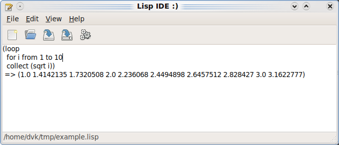
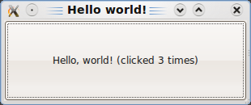

CL-GTK2 Tutorial
Dmitry Kalyanov <Kalyanov.Dmitry@gmail.com>
CL-GTK2 is in alpha stage and is unstable and not feature-complete. It is being developed on x86-64 gentoo linux with SBCL. It should, in general, work with other lisp compilers and on other platforms. CL-GTK2 requires some features not present in the Common Lisp Standard, namely it requires CFFI support with callbacks and long-long support (most modern lisp implementations are supported, including clisp) and it requires CLOS MOP (MetaObject Protocol) which is also is present (or is being added to) most modern lisp implementations.
CL-GTK2 requires Gtk+ version 2.16 or later. CL-GTK2 was tested on SBCL-1.0.18 and SBCL-1.0.28
If you have any difficulties installing or using CL-GTK2, contact me (the author of this tutorial and of CL-GTK2) via email Kalyanov.Dmitry@gmail.com or via jabber mo3r@jabber.ru.
First, install CL-GTK2 dependencies. CL-GTK2 has the following dependencies (CL-GTK2 was tested with specified versions; it would probably not work with earlier versions but should work with later versions):
- CFFI (version 0.10.4)
- Trivial-Garbage (version 0.18)
- Iterate (version 1.4.3)
- Bordeaux-Threads (version 0.6.0)
- Closer-MOP (version 0.55)
Currently, CL-GTK2 is only available in Git repository at http://repo.or.cz/w/cl-gtk2.git. If you do not want or can not use Git, download the snapshot from http://repo.or.cz/w/cl-gtk2.git?a=snapshot;h=HEAD;sf=tgz.
Unpack the CL-GTK2 sources, and add them to asdf:*central-registry*:
(push "/path/to/cl-gtk2/glib/" asdf:*central-registry*) (push "/path/to/cl-gtk2/gdk/" asdf:*central-registry*) (push "/path/to/cl-gtk2/gtk/" asdf:*central-registry*)
or create symlinks:
$ cd ~/.sbcl/systems # or other directory in asdf:*central-registry* $ ln -s /path/to/cl-gtk2/glib/cl-gtk2-glib.asd . $ ln -s /path/to/cl-gtk2/gdk/cl-gtk2-gdk.asd . $ ln -s /path/to/cl-gtk2/gtk/cl-gtk2-gtk.asd .
Now you should be able to load the CL-GTK2 system:
(asdf:operate 'asdf:load-op :cl-gtk2-gtk)
When the system is loaded, run (gtk-demo:demo-text-editor). A text editor window should pop up.

This is a very simple text editor written in CL-GTK2. Apart from editing the text, it can evaluate expressions: select expression and press the "execute" button. Expression will be evaluated and its result will be put into text view.
Let's start from a simple example.
Start Slime, type the following code in the REPL:
(asdf:operate 'asdf:load-op :cl-gtk2-gtk)
(gtk:within-main-loop
(let ((window (make-instance 'gtk:gtk-window :title "Hello, world!")))
(gtk:widget-show window)))
The empty window with title "Hello, world!" should appear.
Let's analyze this example line-by-line.
(asdf:operate 'asdf:load-op :cl-gtk2-gtk) loads the GTK system into Lisp.
CL-GTK2 runs Gtk+ main loop in background thread (because Lisp development is interactive in its nature; if main loop would block the REPL thread, you would have to restart the Lisp image too often). Because all access to Gtk+ should come from Gtk+ thread, we should run the code in that thread. Macro gtk:within-main-loop does exactly that: it schedules the code to be tun in the Gtk+ thread. You should use this macro whenever you want evaluate the code from the REPL or when you start you application.
Next, we create the window with make-instance and set its title property to "Hello, world!".
When the window is created, it is not yet shown on the screen. To show it, we call (gtk:widget-show window).
After this code executes, you should get back to the REPL (rememer, Gtk+ runs in background thread) and the window should appear on the screen.
CL-GTK2 runs the Gtk main loop in background thread. This is done so you could have your application running and interacting with the Lisp system through the REPL.
To execute some code and ensure that Gtk+ main loop is started, WITH-MAIN-LOOP macro is used. It runs the body of code within the Gtk+ main loop. Because all calls to Gtk+ functions require locking, it is neccessary to run this code from th main loop. Because we are running the code in another thread, its dynamic bindings (including *standard-output*) will be lost. To be able to print at REPL, we save reference to the standard output stream in the closure.
Gtk+ objects are created with make-instance and are properly garbage-collected.
Object have properties, which are represented as slots in CL-GTK2. Some properties (slots) of objects are constructor-only properties and can only be set at object construction time. For example, "type" property of GtkWindow can only be set during its creation. To access properties, you may use slot-value function or slot accessor methods. For property Y declared on class X, method X-Y returns the value of the property. Properties are setfable (with exception of read-only and constructor-only properties).
Call to container-add puts button as a child widget into window, and widget-show shows all widgets of window.
In Gtk+, objects have "signals", to which handlers can be attached. When something happens that results in "emitting" the signal (e.g., button being clicked emits "clicked" signal), all handlers of this signal are called. Handler of GtkButton's "clicked" signal has only one argument - the button that was clicked. CL-GTK2 allows attaching any function (including closures) as signal handlers and ensures that closure is freed properly.
GObject
Overview
GObject is an object system that is at the core of Gtk+. GObject provides:
- Objects.
- Classes. Classes define which properties, methods and signals are present in instances of this class and how are they implementation. Classes are grouped into single-inheritance hierarchy. Classes implement zero or more interfaces.
- Interfaces. Interfaces, like classes, define which properties, methods and signals are present in instances of classes that implement this interface but does not specify their implementation.
- Properties. Properties are attributes of objects that have type and can be read or set. Classes provide implementation of getter and setter procedures. Properties may be readable, writable. Some of properties may only be set at object construction time.
- Signals. Signals and callbacks are used to connect event handling code with code that notifies about events.
- Memory management. Objects can be created and destroyed. Memory is managed with reference counting.
Defining GObject classes
G-OBJECT-CLASS metaclass is used to define classes corresponding to GObject classes. G-OBJECT is base class for all classes corresponding to GObject classes.
G-OBJECT-CLASS uses :G-TYPE-NAME option (mandatory) and :G-TYPE-INITIALIZER option (optionally). :G-TYPE-NAME option specifies the GObject class type name that corresponds to the class. :G-TYPE-INITIALIZER specifies the function name that returns the GType of the class.
Classes of G-OBJECT-CLASS metaclass may have regular slots and GObject slots. Such slots correspond to GObject properties.
Slot with :ALLOCATION of :GOBJECT-PROPERTY is a GObject slot. Such slot should have :G-PROPERTY-NAME option that specifies the name of the property to which this slot corresponds. :G-PROPERTY-TYPE option may also be used to specify the type of the property. All other properties may be specified, including :ACCESSOR and :INITARG.
G-OBJECT-CLASS metaclass provides slot accessors for GObject slots that read and write corresponding properties of objects.
To define a GObject class, defclass form is used:
(defclass widget (gtk-objetc atk-implementor-iface buildable)
((name :allocation :gobject-property
:g-property-name "name"
:g-property-type "gchararray"
:accessor widget-name :initarg :name)
(parent :allocation :gobject-property
:g-property-name "parent"
:g-property-type "GtkContainer"
:accessor widget-parent
:initarg :parent)
...)
(:metaclass gobject-class)
(:g-type-name . "GtkWidget")
(:g-type-initializer . "gtk_widget_get_type"))
Using GObject classes
Except defining, GObject classes are used as CLOS classes:
- Created with
MAKE-INSTANCE, and:INITARGSfor slots may be specified.(make-instance 'gtk:label :label "Button 1")
- Slots are accessed with
SLOT-VALUEand accessors:(slot-value l 'label) (setf (slot-value l 'label) "Button 2") (label-label l) (setf (label-label l) "Button 2")
Signals
Signals are used to register functions that get called when specific events are happening in the program.
G-SIGNAL-CONNECT function is used to connect handler to the signal.
Signal handler is a function that accepts the same arguments as the signal.
Example:
(g-signal-connect button "clicked" (lambda (button) (format t "Button ~A was clicked~%" button))
EMIT-SIGNAL function emits the given signal on given object with given arguments. Example:
(emit-signal button "clicked" button)
Dictionary
Following symbols are provided in GOBJECT package as a public interface.
- Class
G-OBJECTBase class for all GObject classes. Metaclass
GOBJECT-CLASSensures that class inherits fromG-OBJECT. - Function
(G-SIGNAL-CONNECT object signal handler &key after)Connects the handler to the signal of the object.
If after is not
NIL, then the handler is connected after other handlers. - Class
G-INITIALLY-UNOWNEDClass that corresponds to GInitiallyUnowned.
- Function
(EMIT-SIGNAL object signal-name &rest args)Emits the signal named signal-name on object with arguments args.
- Metclass
G-OBJECT-CLASSMetaclass for GObject classes.
It has slots:
G-TYPE-NAMEname of GType corresponding to the classG-TYPE-INITIALIZERname of C function returning the GType of the class
Gtk
Overview
Gtk+ is a high-level, object-oriented toolkit for creating graphical user interfaces (GUIs).
Gtk+ is based on a set of other libraries:
- GLib. Provides low-level functionality: interacting with OS, GObject object system.
- Gdk. Provides abstraction around windowing system.
- Pango. Library for Unicode text layout.
- Cairo. Library for drawing.
Gtk+ operates on widgets that are grouped into widget hierarchy. Some widgets are containers and may contain other widgets inside them. Gtk+ assigns widgets' sizes and positions automatically. To achieve this, layouts are used (horizontal and vertical packing, table, size groups).
Main loop
At the core of Gtk+ is the main loop. This loop waits for new events from the windowing system and dispatches them to widgets.
Gtk+ is thread-aware but not thread-safe. All operations with Gtk+ should run within Gdk locks or from main loop. Gtk+ allows code to be scheduled to be run in the main loop.
CL-GTK2 runs Gtk+ main loop in background thread, and all code interacting with Gtk+ should be run from within main loop. Macros WITHIN-MAIN-LOOP and WITHIN-MAIN-LOOP-AND-WAIT run the code in the Gtk+ main loop. WITHIN-MAIN-LOOP schedules the code to be run within main loop and returns immediately. WITHIN-MAIN-LOOP-AND-WAIT schedules the code to be run within main loop, waits for it to complete and returns the result of its evaluation.
Running Gtk+ main loop in background threads allows to run the REPL at the same as the GUI is running.
Example of REPL session:
(defvar *window*) (within-main-loop (setf *window* (make-instance 'gtk-window))) (within-main-loop (container-add *window* (make-instance 'label :label "Hello, world!" :use-markup t))) (within-main-loop (widget-show *window*))
Example of using inside non-interactive code:
(defun run ()
(within-main-loop
(let ((window (make-instance 'gtk-window :title "Hello, world!"
:type :toplevel
:default-width 300
:default-height 300))
(widget-show window)))))
To shutdown the main loop (to quit the application), GTK-MAIN-QUIT function is used which will cause the main loop to quit. From the main thread, you can use the JOIN-MAIN-THREAD function that will wait until the main loop quits.
Example:
(defun run ()
(within-main-loop
(let ((window (make-instance 'gtk-window)))
(g-signal-connect window "delete-event"
(lambda (window event)
(declare (ignore window event))
(gtk-main-quit)))
(widget-show window))))
(run)
(join-main-loop)